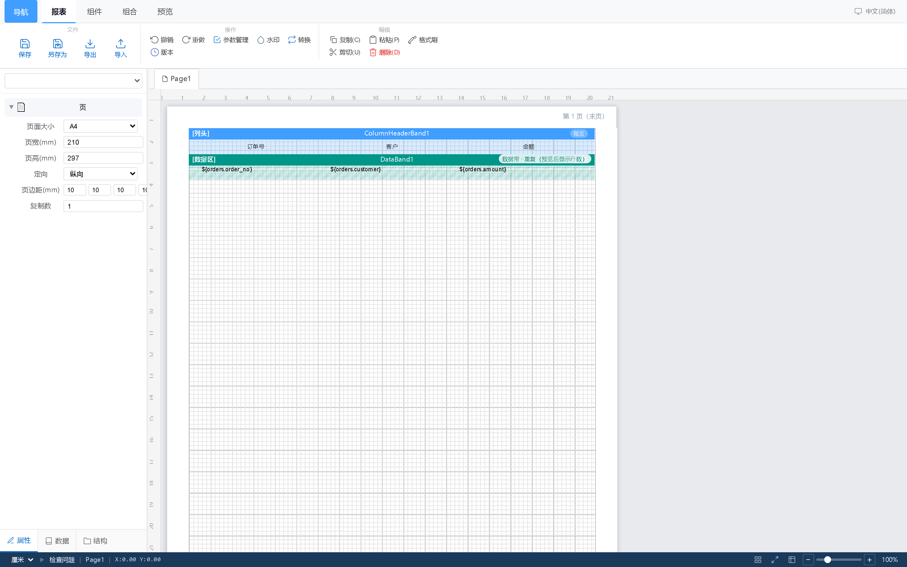
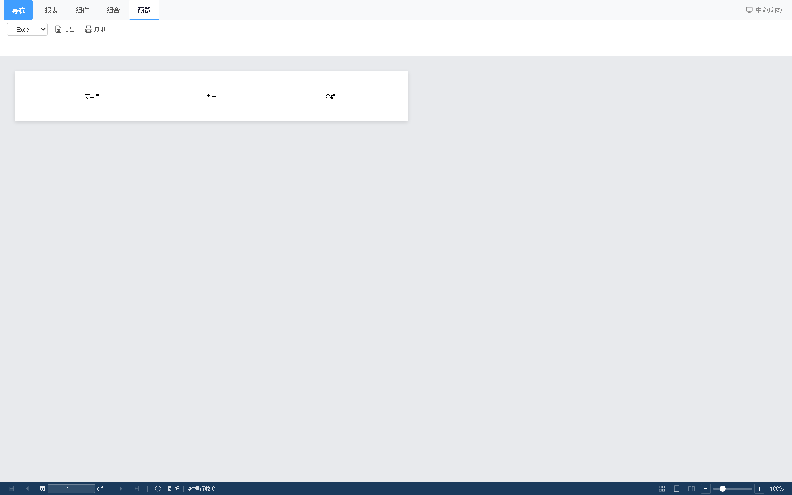

浏览器里拖拽设计带区（Band）报表，连你现有的 MySQL / Oracle / SQL Server / PostgreSQL / ClickHouse， 预览分页，导出 PDF / Excel / Word / SVG / HTML。整个程序就是一个压缩包，内置运行时，拷到内网机器上双击就能跑。

不是功能更多，是落地更省事——这三条决定了你能不能今天就在客户现场把它跑起来。
Windows 包 79 MB、Linux 包 157 MB，内置 CPython 运行时、网页前端和数据库，解压双击 start.bat / ./start.sh，浏览器打开 127.0.0.1:8090 就能设计报表。不用装 Java、不用装 Python、不用 Docker，也不会动客户机器上的任何全局组件。
报表头 / 页眉 / 列头 / 数据区 / 组头组脚 / 页脚 / 报表尾，一套带区模型；文本、表格带、交叉表、图表、条码二维码、子报表都是拖进去的元素。几乎零学习成本。
授权是离线 .lic 文件，按机器码绑定、Ed25519 签名验签，不联网、不激活、不回传任何数据。适合数据不能出内网的制造、医疗、政企场景。
只列已经能用、且我们自己每天在用的部分。
| 能力 | 说明 |
|---|---|
| 设计器 | 带区布局、标尺吸附、多选对齐与分布、层级前后、组合/解组、撤销重做、格式刷、版本管理、水印设置、参数管理 |
| 数据类型 | 文本、图片、线条、矩形、形状、表格带、交叉表、图表、条码 / 二维码、数据标签、子报表 |
| 数据源 | MySQL、PostgreSQL、SQL Server、Oracle、ClickHouse、ODBC，以及 CSV / Excel / JSON / XML 文件；多数据源之间用 DuckDB 做内存 JOIN |
| 表达式 | 模板级计算字段、IIF() / SUM() / COUNT() 等函数、条件样式（按值变色、数据条） |
| 输出 | 分页预览；PDF（矢量）、Excel、Word、RTF、SVG、HTML；数据导出 CSV / JSON / XML（不受试用水印影响） |
| 运行端 | 只读浏览页、Embed 短时 Token 嵌到自己系统、客户与授权管理、调用日志、审计日志、定时任务 |
| 部署形态 | Windows / Linux 免安装包、单容器 Docker、systemd 常驻、设计端 + 运行端双机（MySQL 8） |

只对比「能不能在你的场景里跑起来」，不比较功能数量——功能多少看需求，落地成本看环境。
| 对比项 | GimbalX Report | 传统 Java 报表平台 | 开源报表库（自建） | BI 看板工具 |
|---|---|---|---|---|
| 部署前提 | 解压即用，无需任何运行时 | 要 JDK + 容器 + 数据库 | 要自己写代码集成 | 通常要装服务端/连公网 |
| 内网离线 | 完全离线，授权也不联网 | 可离线，但授权/激活常需联网 | 可离线 | 多数依赖云端 |
| 复杂中式报表 | 带区 + 交叉表 + 子报表 | 强 | 要自己实现 | 弱，偏图表 |
| 导出保真 | PDF 矢量 / Excel / Word | 强 | 看库的能力 | 一般只有图片/PDF |
| 上手成本 | 会 Excel 就能上手 | 要培训 | 要开发 | 较低 |
| 交付给客户现场 | U 盘拷一个 zip | 要装一堆依赖 | 要部署代码 | 要开通账号 |
| 预算量级 | 按席位，小团队也用得起 | 项目制，通常数十万起 | 免费但人力成本高 | 按账号订阅 |
说明：表格描述的是「典型情况」，各家产品差异很大；具体选型请以你自己的环境和试用结果为准。
三个通道内容完全一致，同一套 SHA256。国内优先用前两个。
解压 → 双击 start.bat → 浏览器打开 http://127.0.0.1:8090 → 首次进入初始化向导创建管理员。
Linux 包超过单文件上限，切成两卷，合并后再解压：
cat GimbalX-Report-1.0.0-linux-x86_64.tar.gz.part01 \
GimbalX-Report-1.0.0-linux-x86_64.tar.gz.part02 > GimbalX-Report-1.0.0-linux-x86_64.tar.gz
sha256sum -c SHA256SUMS --ignore-missing试用前最常被问到的几条。
功能不锁、时间不限，唯一差异是：单份报表渲染后超过 2 页时，整份文档每页叠加 [试用版 TRIAL] 水印（预览和 PDF/Excel/Word/HTML/SVG/RTF 导出同样生效）；2 页以内无水印。CSV / JSON / XML 数据导出不受影响。试用版同时只允许 1 个登录会话（防账号共享）。
都不需要。免安装包的运行时、依赖、网页前端全部在包里。如果你喜欢容器，也提供单容器 compose 文件；如果已有 Python 3.12 和 Node 18+，也可以源码方式跑。
不会。程序只连你配置的数据源；授权校验是本地离线验签，不联网、不激活、不上报使用数据、不采集硬件序列号。机器码由操作系统安装标识算出，只用于绑定授权。
可以。运行端支持只读浏览页和 Embed 短期 Token，把报表以 URL 形式嵌进你的业务系统，不需要对方登录你的后台。也提供 REST API 直接触发渲染与导出。
MySQL、PostgreSQL、SQL Server、Oracle、ClickHouse、ODBC，以及 CSV / Excel / JSON / XML 文件。多个数据源之间可以做内存 JOIN（DuckDB），不需要在数据库里建视图。
不用。同一份安装包，导入 .lic 文件即转正式版，立即生效、无需重启。授权按机器码绑定，可一份文件绑定多台机器，按 seats 限制同时在线人数。
不开源。这里发布的是编译打包后的安装包与文档；需要二次开发或私有化定制，可以谈 OEM 合作。
本期没有发布 macOS 二进制包（需要在 Mac 上构建），可以先用 Docker Desktop 跑单容器版本。
按席位授权，小团队也用得起；离线签发，不依赖任何激活服务。
下载即用，不限期、不锁功能。用 2 页以内的报表做业务样张验证完全够用。
按同时在线席位授权：单人、3 人、5 人或不限。同一份文件可绑定多台机器。
集成商可以把报表模块嵌进自己的产品交付客户，支持白标与批量授权。
发一句「报表试用」即可。也可以先在「系统设置 → 授权」复制机器码，一并发过来能省一轮沟通。